7 Dataøvinger
Her finner du dataøvingene som skal gjennomføres i MET4. Se tidsplanen til kurset for en oversikt over når de ulike øvingene skal gjøres og hvilke uker studentassistentene gjennomfører øvingene på datasal.
7.1 Dataøving 1 - Grunnleggende statistikk
I denne dataøvingen skal du lese inn et datasett i R og lage enkel deskriptiv statistikk. Vi forutsetter at du har vært gjennom [Introduksjon til R], som dekker installasjon av R og RStudio og det grunnleggende om å jobbe i R.
Dataene kommer fra et amerikansk forsøk hvor man ville undersøke påstanden om at voldelige dataspill fører til voldelig adferd ved la to grupper spille hvert sitt dataspill. I det “voldelige” dataspillet var oppdraget å skyte og drepe et romvesen, mens i den ikke-voldelige varianten skulle man finne og redde romvesenet fra fare. Utover det var spillene helt likt utformet, og i etterkant av en spilleøkt ble deltakernes aggresjonsnivå målt på en skala fra 1 til 9 ved hjelp av en standard psykologisk test. Dette datasettet ble brukt i eksamensoppgaven vårsemesteret 2019.
Oppgave 1. Last ned filen violence.xlsx. Denne filen lagrer du fortrinnsvis i en egen mappe der du ønsker at filer fra denne øvingen skal ligge. Åpne så RStudio, velg File -> New File -> R Script for å åpne et nytt Rscript. Lagre så scriptet ditt i samme mappen som du har lagt datasettet, slik at du nå har en mappe som ser ut som figuren under:
Når vi skal lese inn data, lagre figurer og andre ting har R en standard ‘mappesti’ (working directory) den leter/lagrer i. Du kan se hva denne stien peker på ved å skrive getwd() i konsollen. Du skal nå spesifisere denne mappestien til mappen du har opprettet. Dette gjør du raskest ved å velge Session -> Set Working Directory -> To Source File Location. Neste gang du skal jobbe med dette prosjektet kan du åpne RStudio ved å dobbeltklikke på dataøving1.R, og mappestien skal da settes automatisk til riktig mappe.
Lag gjerne en liten overskrift ved hjelp av kommentartegnet # slik at .R filen din ser omtrent slik ut:

Oppgave 2. Du skal nå lese inn excel filen du lagret i over i R. Selv om det finnes mange funksjoner som allerede er innebygget i R, må man noen ganger installere ekstra ‘pakker’ for å få tilgang til spesielle funksjoner. For å lese inn en excel fil trenger du nettopp en slik ikke standard funksjon. Denne finnes i pakken readxl. Selve installeringen kan du gjøre direkte i konsollen med å skrive (hvis du ikke har gjort det allerede, for eksempel da du gikk gjennom forelesningsvideoen om R-pakker):
install.packages("readxl")Pakken legger seg da i en bibliotekmappe der R er installert. For å gi R beskjed om å laste inn funksjonene til pakken du nettopp installerte bruker du funksjonen library(). Du har nå tilgang til en funksjon kalt read_excel() som du kan bruke til å lese inn excel filen:
# MET4 - Dataøving 1
# ------------------
# les inn data
library(readxl)
violence <- read_excel("violence.xlsx")Warning: package 'readxl' was built under R version 4.3.3Marker linjene du nettopp skrev i R-skriptet ditt og trykk Ctrl + Enter (Cmd + Enter), for å opprette objektet violence som inneholder datasettet. Funksjonen ls() lister opp alle objekter som har blitt definert. Du kan prøve selv å skrive følgende i konsollen:
ls()[1] "pandoc_dir" "quarto_bin_path" "violence" Du ser at det har kommet et nytt objekt som heter violence. En tilsvarende oversikt finner du i vinduet øverst til høyre i RStudio (se Figur 1.1) hvor du også kan klikke på objektet for å se nærmere på det.
Oppgave 3. Ta en titt på strukturen til datasettet du nettopp leste inn. Når du gjør slike små utforskninger kan du gjerne jobbe direkte i konsollen, og det du gjør i dette punktet trenger nødvendigvis ikke være med i .R-filen din. Gå til konsollen og bruk funksjoner som class, dim, names, head og str for å utforske strukturen på dataene. Vi ser at det er 5 variabler:
ider bare et tall som identifiserer forsøkspersonen.aggression_leveler aggresjonsnivået som ble målt rett etter at forsøkspersonen hadde spilt en viss tid.violent_treatmenter varianten av dataspillet som forsøkspersonen ble utsatt for; entenViolentellerLess Violent.difficulty_treatmenter vanskelighetsgraden av spillet, som enten varEasyellerHard. En mulig forklaring på aggressiv adferd er at vanskelige spill fører til høyere stressnivå, som igjen kan føre til aggressivitet.experienced_violenceer svaret til forsøkspersonen på spørsmålet om vedkommende oppfattet spillet somViolentellerLess Violent. Forsøkspersonene visste ikke selv hva forsøket gikk ut på, eller at det var flere varianter av det samme spillet.
Oppgave 4.
Vi skal se nærmere på om aggresjonsnivået er forskjellig i de to gruppene. Da må vi trekke ut de aktuelle tallene fra datasettet. Vi ønsker å velge ut to vektorer for å gjøre denne sammenligningen: en vektor som inneholder aggresjonsnivået til gruppen som har spilt det voldelige dataspillet, og en vektor som inneholder aggresjonsnivået til gruppen som har spilt det ikke-voldelige dataspillet.
La disse to vektorene få navn voldelig og ikke_voldelig, og lag dem ved å skrive følgende kodelinjer (se video om pipe-operatoren og enkel datavask for en forklaring av disse funksjonene. Den siste linjen, pull, gjør en dataframe med én kolonne om til en vektor) :
# Laster inn dplyr-pakken
library(dplyr)
Attaching package: 'dplyr'The following objects are masked from 'package:stats':
filter, lagThe following objects are masked from 'package:base':
intersect, setdiff, setequal, union# Vektorer med aggresjonsnivå til gruppen som har spilt voldelig/ikke-voldelig spill
voldelig <-
violence %>%
filter(violent_treatment == "Violent") %>%
select(aggression_level) %>%
pull
ikke_voldelig <-
violence %>%
filter(violent_treatment == "Less Violent") %>%
select(aggression_level) %>%
pullSjekk nå at dette har fungert ved å skrive voldelig og ikke_voldelig inn i konsollen for å se at det faktisk er vektorer som inneholder tallene 1 til 9. Bruk også noen minutter til å prøve å forstå hva kodelinjene over faktisk gjør.
(NB! Pass på at du skriver Violent og Less Violent helt riktig med store og små bokstaver, ellers vil det ikke fungere!)
Oppgave 5. I eksamensoppgaven fra 2019 får vi oppgitt deskriptiv statistikk over aggresjonsnivået for de to gruppene i følgende tabell:

Bruk funksjoner som min(), max(), median(), mean(), length() og summary() til å finne ut om tallene stemmer (Du vil se at datasettet ditt inneholder noen færre observasjoner enn det som er oppgitt i tabellen, som gjør at tallene er litt forskjellige).
Oppgave 6. Vi skal nå lage et histogram av aggresjonsnivået, med ett histogram for hver av de to gruppene. Et svært viktig punkt er følgende:
ggplot-funksjonen skal alltid ha hele datasettet (en data frame) som argument!!
Det betyr at vi ikke skal bruke de to vektorene voldelig og ikke_voldelig som vi lagde over, men hele datasettet violence. Variabelen som inneholder aggresjonsnivået er aggression_level, så det er den vi bruker som \(x\)-argument. Vi husker å laste inn ggplot2-pakken først, og gjør et første forsøk:
library(ggplot2)
ggplot(violence, aes(x = aggression_level)) +
geom_histogram(bins = 9)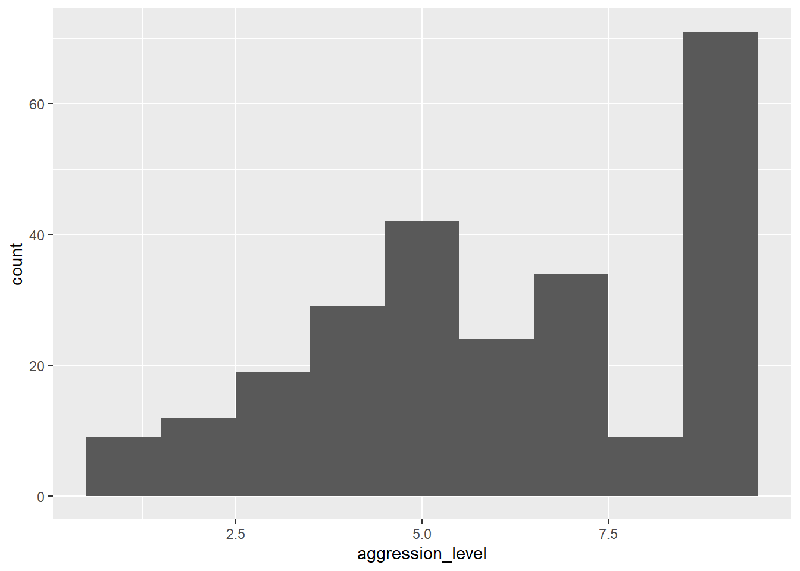
Nesten! Det eneste problemet er at vi har ett histogram for alle observasjonene, mens det vi egentlig ønsket var å lage et histogram for hver av gruppene. Dette er såre enkelt i ggplot2. Det eneste vi trenger å gjøre er å identifisere den variabelen i datasettet som angir gruppetilhørighet (sjekk variabeloversikten over, svaret er violent_treatment), og så plusse på en funksjon som heter facet_wrap() som vist under.
ggplot(violence, aes(x = aggression_level)) +
geom_histogram(bins = 9) +
facet_wrap(~ violent_treatment)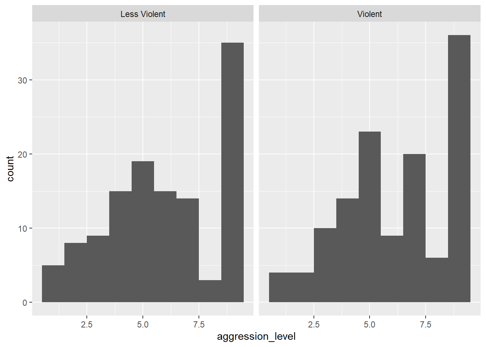
Dersom vi i stedet ønsker et skalert histogram kan vi spesifisere y-argumentet på følgende vis:
ggplot(violence, aes(x = aggression_level, y = after_stat(density))) +
geom_histogram(bins = 9) +
facet_wrap(~ violent_treatment)Oppgave 7. Når man skal sammenligne sentrum og spredning i to grupper er et boxplott et ypperlig alternativ og vi kan da bruke funksjonen boxplot() i “base R”, eller funksjonen geom_boxplot() hvis vi heller ønsker å benytte ggplot2. Vi holder oss til det siste alternativet her, og ser at kodelinjene ligner på det vi laget over.
Dersom vi ønsker å lage et enkelt boxplot av en variabel for å sammenligne spredingen i to eller flere grupper kan vi skrive
ggplot(a, aes(x = b, y = c)) +
geom_boxplot()Her må du selv erstatte bokstavene a, b og c i henhold til følgende regel:
aer navnet på datasettet.ber variabelen som inneholder gruppeinndelingen.cer variabelen som inneholder målingene.
De ferdige kodelinjene skal være med i .R-skriptet ditt. For å se boxplottet kan du som vanlig kjøre kommandoene med å trykke Ctrl + Enter. Ser det ut til å være noe forskjell på sentrum og spredning i de to gruppene?
Bonusoppgave. Bytt ut geom_boxplot() over med geom_jitter() og geom_violin(). Hva viser disse plottene?
7.2 Dataøving 2
7.2.1 Interaktiv øvelse
Før vi tar fatt på dataanalysen begynner vi med litt R-trening i swirl. Har du allerede installert pakken swirl (skriv install.packages("swirl") i konsoll hvis ikke) starter du opp swirl med å skrive følgende i konsollen:
library(swirl)
swirl()Du vil i starten bli bedt om å skrive inn ditt navn. Hvis du bruker samme navn som tidligere får du kanskje tilbud om å starte opp igjen der du slapp, men da kan du bare velge det nederste valget ‘No. Let me start something new’. Du velger så alternativet ‘R Programming’ hvor du får se alle modulene dette kurset inneholder. I denne øvingen skal du prøve deg på modul 6 ‘Subsetting Vectors’ og modul 8 ‘Logic’.
Husk at det helt til høyre vil står hvor langt du har kommet i prosent. Står du helt fast med et punkt kan du skrive skip() for å hoppe over dette punktet. Når du har fullført en modul blir du spurt om du vil motta ‘credit’ for å ha fullført modulen. Her kan du svare nei. Ønsker du å avbryte underveis skriver du bye(). Skriver du inn det samme navnet når du eventuelt starter swirl igjen kan du fortsette der du slapp. Husk å avslutt swirl () før du begynner på neste del av datalabben. Lykke til!
7.2.2 Data til dataøvelsen
I denne dataøvelsen skal vi ved hjelp av R gjennomføre en del av testene som vi har lært i praksis. Vi skal gjøre både ett- og to-utvalgs tester, og vi skal bruke \(\chi^2\)-testen
Vi skal jobbe med tre ulike datasett i denne øvingen, og alle sammen kan lastes ned ved å klikke på lenkene under:
Last ned disse filene og legg dem i en mappe på datamaskinen din. Åpne så RStudio, velg File -> New File -> R Script for å åpne et nytt Rscript, og lag gjerne en liten overskrift ved hjelp av kommentartegnet #. Lagre så scriptet ditt i samme mappen som du har lagt datasettene, slik at du nå har en mappe som ser ut som figuren under:

Det neste du må gjøre er å sørge for at du har satt opp riktig mappesti (working directory) i RStudio, og det gjør du raskest ved å velge Session -> Set Working Directory -> To Source File Location. Neste gang du skal jobbe med dette prosjektet kan du åpne RStudio ved å dobbeltklikke på dataøving2.R, og mappestien skal da settes automatisk til riktig mappe. I alle tilfeller skal vinduet ditt se omtrent slik ut:

7.2.3 Oppgaver til øvingen:
7.2.3.1 Oppgave 1
Costa Rica er en stor kaffeprodusent med moderne produksjon. Kaffeprodusentene har over lengre tid benyttet en standardisert miks av sprøytemidler som skal ta knekken på ugress og skadelige insekter, men uten å skade avlingen eller miljøet ellers.
En liten kaffeplantasje i Costa Rica har begynt å eksperimentere med en ny kombinasjon av sprøytemidler som skal være like effektiv mot ugress, men samtidig enda mer skånsom mot kaffeplantene, slik at avlingen blir større. Innehaveren av plantasjen ønsker å sette opp et eksperiment for å undersøke denne påstanden. Han velger ut 25 tilfeldige jordlapper fordelt på hele eiendommen der han bruker de nye sprøytemidlene gjennom en hel sesong.
Lang erfaring har vist at avlingen ved bruk av gammel metode er normalfordelt med forventning \(\mu = 100\) og standardavvik \(\sigma = 10\), der vi har brukt en standardisert enhet for mengde avling per arealenhet. Hjelp bonden, ved å løse følgende oppgaver:
Oppgave 1.1: Les inn datasettet testdatasdata.xsl i RStudio og se på de første par radene. Det kan du gjøre ved å kjøre følgende kodelinjer:
library(readxl) # Pakke for å lese excel-filer
data <- read_excel("testdata.xls") # Leser inn datasettet
data # Ser på datasettet# A tibble: 25 × 4
X1 X2 A1 A2
<dbl> <dbl> <dbl> <dbl>
1 122. 121. 1 1
2 101. 105 1 1
3 114. 108 1 1
4 103 99.1 1 0
5 97.6 96.2 0 0
6 85.9 95.4 0 0
7 93.5 101. 0 1
8 92 97 0 0
9 98.8 106. 0 1
10 99.9 100. 0 1
# ℹ 15 more rowsDet er kolonnen X2 som inneholder de observerte avlingene på de 25 forsøksseksjonene.
Oppgave 1.2: Er forventet avling ved bruk av den nye metoden større enn forventet avling ved bruk av den gamle metoden? Hint: Forelesningsnotatene/scriptet inneholder koden du trenger for å løse denne og neste oppgave. Du kan også se på oversikten over relevante R-kommandoer for det du trenger.
Oppgave 1.3: Det er viktig for kaffebonden at avlingen ikke varierer for mye mellom de ulike delene av farmen. En viktig måleparameter for denne type produksjon er derfor variansen. Kan vi slå fast at variansen til avlingen har forandret seg etter omlegging til ny metode?
Oppgave 1.4: Kaffebonden er skeptisk til påstanden om at forventet avling med den gamle metoden er \(\mu = 100\), og mener at det vil variere med for eksempel jordsmonn. For å ta høyde for dette gjennomførte han året i forveien tilsvarende målinger på de samme jordlappene, med med gammel sprøytemetode. Disse målingene finner du i kolonne X1 i datasettet. Test om avlingene er forskjellige, både med og uten paring av observasjonene. Kommenter resultatet.
7.2.3.2 Oppgave 2
Vi skal i denne oppgaven se på oppgave 1a og 1b som ble gitt på skoleeksamen i MET4 vårsemesteret 2019. Dette er det samme datasettet som vi så på i forrige dataøving. I et amerikansk forsøk ville man undersøke påstanden om at voldelige dataspill fører til voldelig adferd ved la to grupper spille hvert sitt dataspill. I det “voldelige” dataspillet var oppdraget å skyte og drepe et romvesen, mens i den ikke-voldelige varianten skulle man finne og redde romvesenet fra fare. Utover det var spillene helt likt utformet, og i etterkant av en spilleøkt ble deltakernes aggresjonsnivå målt på en skala fra 1 til 9 ved hjelp av en standard psykologisk test.
I denne oppgaven skal vi i hovedsak finne ut om gruppen som spilte de voldelige dataspillet hadde signifikant høyere aggresjonsnivå enn kontrollgruppen.
Oppgave 2.1: Les inn datasettet violence.xslx på samme måte som i forrige dataøving. Hvis du allerede har kjørt library(readxl) trenger du ikke gjøre det igjen med mindre du har startet RStudio på nytt. Gi datasettet et passende navn, f.eks
violence <- read_excel("violence.xlsx")Vi skal altså teste om aggresjonsnivået er forskjellig i de to gruppene. Da må vi trekke ut de aktuelle tallene fra datasettet. Som vi husker fra forelesningsnotatene trenger vi to vektorer for å gjøre en to-utvags \(t\)-test: en vektor som inneholder aggresjonsnivået til gruppen som har spilt det voldelige dataspillet, og en vektor som inneholder aggresjonsnivået til gruppen som har spilt det ikke-voldelige dataspillet.
La disse to vektorene få navn voldelig og ikke_voldelig, og lag dem ved å skrive følgende kodelinjer (samme som forrige dataøving):
voldelig <-
violence %>%
filter(violent_treatment == "Violent") %>%
select(aggression_level) %>%
pull
ikke_voldelig <-
violence %>%
filter(violent_treatment == "Less Violent") %>%
select(aggression_level) %>%
pullOppgave 2.2: Vi er nå klare til å gjøre en to-utvalgs \(t\)-test for om aggresjonsnivået er det samme i de to gruppene. Prøv å gjøre det nå, men vær bevisst på hvilke valg du gjør underveis, og som du mater inn i t.test()-funksjonen, f.eks:
- Antar du lik varians i de to gruppene? Hvorfor/Hvorfor ikke?
- Bruker du ensidig eller tosidig test? Hvorfor?
Oppgave 2.3: En avgjørende detalj i studien som vi ser på i denne oppgaven er at forskerne også spurte forsøkspersonene hvorvidt de selv syntes spillet de spilte var voldelig. For å kunne trekke noen som helst lærdom fra et slikt forsøk er det viktig at den voldelige spillvarianten faktisk blir oppfattet som voldelig og vice versa. Vi ønsker dermed å undersøke nullhypotesen om at variablene violence_tratment og experienced_violence er uavhengige av hverandre. Den hypotesen er vi nødt til å forkaste for at forsøket skal være gyldig: hvis det ikke er noen sammenheng mellom opplevd og faktisk voldelighet er forsøket helt klart ugyldig.
Første steg er å lage et nytt datasett der vi bare ta med oss de to kolonnene vi er interessert i. Kall det hva du vil, f.eks. violence_redusert. Vi bruker select()-funksjonen til å velge ut variablene vi trenger, se video om datavask dersom du trenger å repetere denne funksjonen.
violence_redusert <-
violence %>%
select(violent_treatment, experienced_violence)Skriv violence_redusert i konsollen for å bekrefte at du har valgt ut de korrekte kolonnene.
Vi fortsetter som i videoforelesningen og lager en krysstabell for disse variablene
krysstabell <- table(violence_redusert)
krysstabell experienced_violence
violent_treatment Less Violent Violent
Less Violent 114 9
Violent 33 93Oppgave 2.4: Heldigvis ser det ut til at det er en klar sammenheng mellom faktisk og opplevd voldelighet ved at de fleste forsøkspersonene havner på diagonalen i krysstabellen. Bruk funksjonen chisq.test() på samme måte som i forelesningen til å formelt teste nullhypotesen om uavhengighet.
7.2.3.3 Oppgave 3
Vi skal i denne oppgaven returnere til kaffeproduksjon. Vi skal gjøre statistiske tester i R som i de tidligere oppgavene i denne øvingen, men vanskelighetsgraden går opp fordi vi også må tenke nøye over hvordan vi anvender metodene korrekt i en gitt kontekst.
I 2002 publiserte det prestisjetunge tidsskriftet Nature en kort artikkel skrevet av David W. Roubik1, som handler om den kjente kaffebønnen Arabica. Arabicabønnen kommer opprinnelig fra Afrika, og er en selvpollinerende plante. Det vil si at den ikke er avhengig av insekter for å formere seg, og man trodde lenge at den heller ikke hadde noen fordeler av insektspollinering.
For å undersøke denne påstanden samlet Roubik inn historiske data over arabicaavlinger fra hele verden. Han delte verdens kaffeproduserende land inn i to kategorier: Old world som omfatter afrikanske og asiatiske land, og New world som omfatter land i Latin-Amerika. Han registrerte videre gjennomsnittlig årlig avling (målt i kg/hektar) i to perioder: 1961–80 og 1981–2001.
Nøkkelen til analysen er at den afrikanske honningbien var en viktig pollinator i Afrika og Asia både i den første og andre perioden, men knapt eksisterte i Amerika før 1980. Etter 1980, derimot, økte utbredelsen av denne bien i Amerika, og ble fort naturalisert. Kan vi sette denne utviklingen i sammenheng med økt kaffeavling i Latin-Amerika etter 1980, og dermed skrote teorien om at kaffeplanter ikke drar nytte av insektspollinering?
Oppgave 3.1: For å undersøke dette kan vi bruke datasettet som Roubik brukte, som finnes i filen roubik_2002_coffe_yield.xlsx. Last datasettet inn i R på vanlig måte, og se på det:
yield <- read_excel("roubik_2002_coffe_yield.xlsx")
yield# A tibble: 28 × 4
world country yield_61_to_80 yield_81_to_01
<chr> <chr> <dbl> <dbl>
1 new Costa_Rica 9139 14620
2 new Bolivia 7686 8767
3 new El_Salvador 9996 8729
4 new Guatemala 5488 8231
5 new Colombia 5920 7740
6 new Honduras 4096 7264
7 new Nicaragua 4566 6408
8 new Brazil 4965 6283
9 new Peru 5487 5740
10 new Mexico 5227 5116
# ℹ 18 more rowsVi ser at det er fire kolonner i datasettet:
worldangir om det er snakk om New world (new) eller Old world (old).countryangir navnet på landet.yield_61_to_80angir avlingen i perioden 1961–80.yield_81_to_01angir avlingen i perioden 1981–2001.
Oppgave 3.2: Kall den første tidsperioden p1 og den andre tidsperioden p2. Lag så fire vektorer, en for hver kombinasjon av world og tidsperiode ved å bruke samme teknikk som i oppgave 2.2 over. Når du er ferdig, skal du ha laget følgende vektorer:
new_p1: inneholder avling for alle land medworld == newi første periode.new_p2: inneholder avling for alle land medworld == newi andre periode.old_p1: inneholder avling for alle land medworld == oldi første periode.old_p2: inneholder avling for alle land medworld == oldi andre periode.
Her må du bruke både filter() og select(), og du må avslutte med en pull for å oversette en en-kolonnes dataframe til en vektor.
Dersom du har gjort det riktig, ser vektorene slik ut når du er ferdig:
new_p1 [1] 9139 7686 9996 5488 5920 4096 4566 4965 5487 5227 2347 3089 1938new_p2 [1] 14620 8767 8729 8231 7740 7264 6408 6283 5740 5116 4124 3240
[13] 2789old_p1 [1] 4251 10522 3509 10028 5667 17064 5904 4001 6604 4738 5716 3824
[13] 3525 3393 3213old_p2 [1] 13380 11561 9652 9593 8797 7869 7354 7288 6055 5432 5394 3576
[13] 3141 2391 2136Oppgave 3.3: Bruk en paret \(t\)-test til å finne ut om kaffeavlingen i den gamle verden er signifikant forskjellig i de to tidsperiodene.
Oppgave 3.4: Bruk en paret \(t\)-test til å finne ut om kaffeavlingen i den nye verden er signifikant forskjellig i de to tidsperiodene.
Oppgave 3.5 (Diskusjonsopgave): Dersom du har gjort de to foregående oppgavene riktig vil du se at den gjennomsnittlige kaffeavlingen ikke har endret seg signifikant i den gamle verden, mens økningen i den nye verden er klart statistisk signifikant. Vi har brukt parrede \(t\)-tester, slik at vi “kontrollerer for” eventuelle landeffekter (denne terminologien blir skal vi bruke mer når vi skal jobbe med regresjon).
Roubik omtaler funnet som følger:
A substantial increase in Latin American coffee yield partly coincided with the establishment of African honeybees in those countries, although there was no such change in the Old World, where honeybees originated […]. This comparison underlines a possible cause-and-effect relationship between the presence of social bees and cofee yield.
Dette er intet mindre enn en kortslutning, på minst to forskjellige måter. Hvorfor? Diskuter med dine medstudenter. Kan det gjennomføres en enkel test som gir et bedre bilde av situasjonen?
7.3 Dataøving 3
7.3.1 Oppgave 1: Interaktiv øvelse
Før vi tar fatt på dataanalysen begynner vi som vanlig med litt R-trening i swirl. Har du allerede installert pakken swirl (skriv install.packages("swirl") i konsoll hvis ikke) starter du opp swirl med å skrive følgende i konsollen:
library(swirl)
install_course("Regression_Models") # legger til nytt kursmateriale om regresjon
swirl()Du vil i starten bli bedt om å skrive inn ditt navn. Hvis du bruker samme navn som tidligere får du kanskje tilbud om å starte opp igjen der du slapp, men da kan du bare velge det nederste valget ‘No. Let me start something new’. Du velger så alternativet ‘Regression Models’ hvor du får se alle modulene dette kurset inneholder. I denne øvingen skal du prøve deg på modul modul 1 ‘Introduction’. Her vil du lære litt om hvordan du kan bruke R til å gjøre en regresjonsanalyse ved hjelp av et treningsdatasett. Noen av kommandoene som gjennomgås i denne modulen vil komme til nytte senere i datalabben.
Husk at det helt til høyre vil står hvor langt du har kommet i prosent. Står du helt fast med et punkt kan du skrive skip() for å hoppe over dette punktet. Når du har fullført en modul blir du spurt om du vil motta ‘credit’ for å ha fullført modulen. Her kan du svare nei. Ønsker du å avbryte underveis skriver du bye(). Skriver du inn det samme navnet når du eventuelt starter swirl igjen kan du fortsette der du slapp. Husk å avslutt swirl (esc) før du begynner på del to av øvingen. Lykke til!
7.3.2 Oppgave 2: Regresjonsanalyse
Et rock-and-roll museum åpnet i Atlanta i 1990. Museet lå i en sentral del av byen i nærheten av mange ulike butikker. Mot slutten av juli måned i 1992 startet en stor brann i en av disse butikkene som ødela hele kvartalet, inkludert museet. Heldigvis var museet forsikret, både mot selve brannskadene, og mot tapte billettinntekter i gjennoppbyggingsperioden.
Vanligvis vil et forsikringsselskap beregne erstatningsbeløpet under antakelsen om at besøkstallene i gjenoppbyggingsperioden ville vært på samme nivå som besøkstallene i tiden før brannen. I dette tilfellet mente derimot eierne av museet at besøkstallene var økende, slik at de reelt sett hadde krav på et større erstatningsbeløp. Argumentet var basert på besøkstallene til en fornøyelsespark like ved. Fornøyelsesparken åpnet i desember 1991, slik at museet og parken opererte sammen i de siste fire ukene av 1991, og de første 28 ukene i 1992 før brannen ødela museet.
Museet åpnet igjen i april 1995, men var da betydelig større enn det var opprinnelig. Data for besøkstall for museet og fornøyelsesparken finner vi i regnearket C16-01.xlsx. Som i de to foregående dataøvingene legger du denne filen i en mappe på maskinen din, og oppretter et tomt R-script der du lagrer koden for denne oppgaven.
Oppgave 2.1: Kikk raskt på datasettet i Excel eller tilsvarende. Du ser at det er tre kolonner, en som angir ukenummer (Week, teller fra 1 til 205), en som angir ukentlig besøkstall på museet (Museum) og en som angir ukentlig besøkstall i fornøyelsesparken (A-Park). Legg merke til at besøkstallet i museet er null fra og med uke 33, til og med uke 179, som er perioden fra brannen til nyåpning.
Oppgave 2.2: Last så datasettet inn i R som før ved hjelp av read_excel()-funksjonen. Gi det et passelig navn (f.eks visits), og sjekk raskt at det har gått bra ved å taste inn datanavnet i konsollen. Da skal det se omtrent slik ut:
visits# A tibble: 205 × 3
Week Museum `A-Park`
<dbl> <dbl> <dbl>
1 1 787 1379
2 2 1179 1396
3 3 4225 5332
4 4 1336 1477
5 5 2122 3717
6 6 1136 1663
7 7 2413 3573
8 8 1399 2086
9 9 1528 2503
10 10 1788 2553
# ℹ 195 more rowsLegg merke til følgende:
- Observasjonene ser ut til å være de samme som vi så da vi kikket på selve regnearket. Det er alltid en god vane å forsikre seg om at R har lest inn datasettet på riktig måte.
- Et av variabelnavnene har fått noen rare tødler rundt seg. Grunnen til det er at
A-parkinneholder en bindestrek, så for at R ikke skal tolke det tegnet som et minustegn (og dermed gi oss et mareritt med feilmeldinger), må vi alltid bruke disse tødlene når vi refererer til denne variabelen. (På tastaturet som forfatteren av disse ord skriver på, er detShift +tasten til venstre forBackspace.
Oppgave 2.3: Før vi går videre, må vi få et bedre begrep om problemet ved å kikke grafisk på observasjonene. La oss plotte observasjonene i et linjeplott for å se hvordan de utvikler seg over tid, ved å ha ukenummer på \(x\)-aksen og besøkstall på \(y\)-aksen. Vi kan lage et enkelt plott for besøkstall for museet ved å skrive
# Laster først ggplot-pakken (det trenger vi bare gjøre en gang i skriptet)
library(ggplot2)
# Lager et enkelt linjeplott:
ggplot(visits, aes(x = Week, y = Museum)) +
geom_line()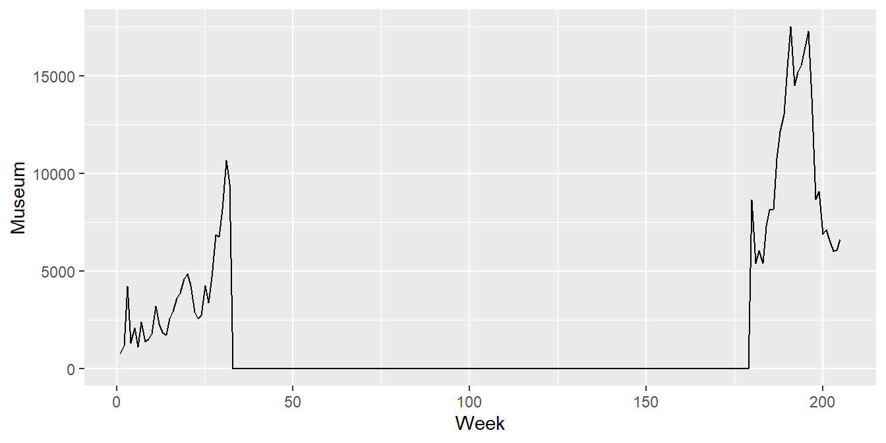
Du kan legge til besøkstall for fornøyelsesparken ved å plusse på en ny linje med geom_line(), men da må du spesifisere y-variabelen på nytt. Hele plottekommandoen blir da:
ggplot(visits, aes(x = Week, y = Museum)) +
geom_line() +
geom_line(aes(y = `A-Park`))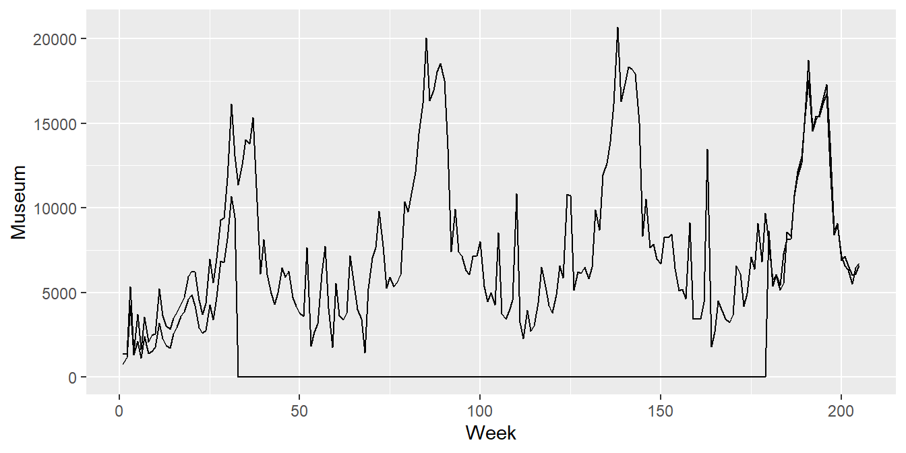
Vi ser at det er en sterk sammenheng mellom besøkstallene til museet og parken, spesielt etter gjenåpningen i 1995, og det skal vi utnytte når vi senere skal beregne erstatningssummen.
Oppgave 2.4: Juster på argumentene i geom_line()-funskjonene, og legg til flere “lag” på samme måte som vi gjorde for å pynte på figuren i oppgave 8 i kapittel Seksjon 1.12 (det er 100% lov å Google). Dette ser bedre ut:
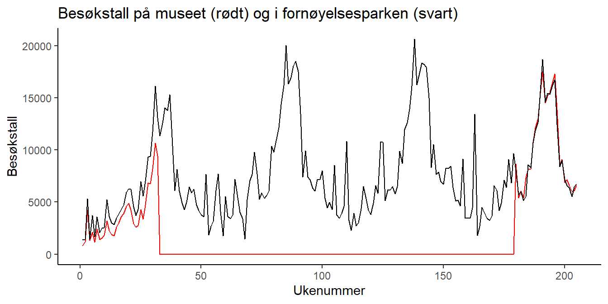
Oppgave 2.5: La oss nå ta utgangspunkt i forsikringsselskapets påstand: besøkstallet i perioden der museet er stengt skal beregnes ved hjelp av observasjonene før brannen. Vi estimerer parametrene i en enkel regresjonsmodell
\[y_i = \beta_0 + \beta_1x_i + \epsilon,\] der responsvariabelen \(y_i\) er besøkstallet på museet på dag nr. i, og \(x_i\) er besøkstallet i fornøyelsesparken samme dag. Datasettet vi skal bruke er altså de 32 første radene i datasettet visits. Da kan vi enten lage en ny tabell som består av de 32 første radene (for eksempel ved hjelp av filter(Week <= 32)), eller så kan vi bruket argumentet subset i lm()-funkesjonen til å spesifisere hvilke observasjoner som skal brukes for å estimere modellen:
reg1 <- lm(Museum ~ `A-Park`, data = visits, subset = 1:32)Oppgave 2.6: Pakken stargazer inneholder funksjoner for å lage pene regesjonstabeller automatisk fra regresjonsobjekter i R. Pakken må installeres og lastes på vanlig måte:
install.packages("stargazer")
library(stargazer)Inne i stargazer-pakken er det en funksjon som også heter stargazer(). Hvis du ikke har sett den brukt før (f.eks i forelesning), kan du lese mer om den ved hjelp av hjelpefunksjonen: ?stargazer. Bruk så stargazer() til å lage følgende regresjonsutskrift (hint: bruk argumentet type = "text"):
===============================================
Dependent variable:
---------------------------
Museum
-----------------------------------------------
`A-Park` 0.693***
(0.018)
Constant 16.229
(114.695)
-----------------------------------------------
Observations 32
R2 0.979
Adjusted R2 0.979
Residual Std. Error 355.588 (df = 30)
F Statistic 1,424.094*** (df = 1; 30)
===============================================
Note: *p<0.1; **p<0.05; ***p<0.01Oppgave 2.7: Lag tre diagnoseplott etter mal som er gitt i forelesningsnotatene: Et som viser residualene i regresjonsmodellen i et spredningsplott, et QQ-plott, og et histogram. Kan du gjøre en grov vurdering om hvorvidt forutsetningene for lineær regresjon er oppfylt?
Oppgave 2.8: Bruk denne regresjonsmodellen til å beregne hva besøkstallet hadde vært dersom museet hadde vært åpent som vanlig. Dette kan vi gjøre ved å bruke predict()-funksjonen. Følg oppskriften under nå, så skal du prøve å gjøre det selv etterpå.
# Vi lager et nytt datasett bestående av de ukene der museet var stengt:
visits_pred <-
visits %>%
filter(Museum == 0) %>%
select("Week", "A-Park")
# Bruker predict()-funksjonen til å predikere tilhørende y'er:
predicted_visits1 <- predict(reg1, newdata = visits_pred)
# Til slutt legger vi til de predikerte verdiene som en ny kolonne i visits_pred:
visits_pred$predikert1 <- predicted_visits1De predikerte besøkstallene er nå lagret som kolonne predicted1 i datasettet visits_pred.
Oppgave 2.9 For å få bedre greie på hvordan prediksjonene egentlig ser ut kan vi legge dem til figuren vår fra over. La oss lage en blå stiplet linje, og det kan vi gjøre med å legge til enda et kall til geom_lines(). Denne gangen må vi bruke flere argumenter:
- Vi må bruke argumentet
datatil å si at tallene vi skal plotte for den nye linjen nå ligger i datasettetvisits_pred, og ikkevisits. - Vi må bruke argumentet
colourtil å fortelle hvilken farge vi skal ha på linjen. - Vi må bruke argumentet
linetypetil å fortelle at vi vil ha en stiplet linje.
Ta for deg figuren du lagde i oppgave 2.4, og legg til følgende linjer (husk å få med en + mellom hvert lag):
geom_line(aes(x = Week, y = predikert1),
data = visits_pred,
colour = "blue",
linetype = "dashed")Da blir figuren min seende slik ut:
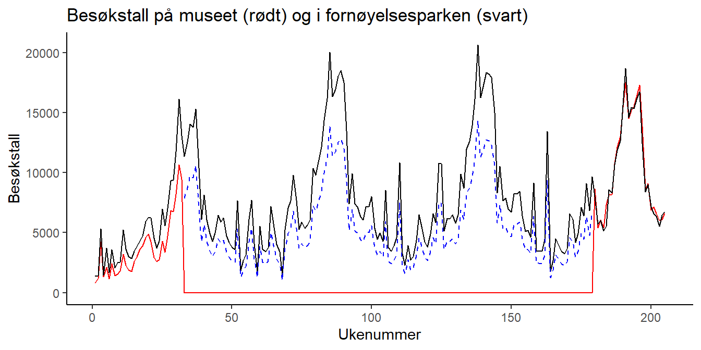
Oppgave 2.10: Kommenter kort regresjonsutskriften fra oppgave 2.6 og figuren fra oppgave 2.9. Ser det fornuftig ut?
Oppgave 2.11: Se på saken heller fra museets side. De mener at det er besøkstallene fra etter åpningen i 1995 som skal brukes til å estimere regresjonsmodellen. Det er lett å forstå hvorfor de ønsker det, for da ser det ut som at det er omtrent like mange besøkende på museet som i fornøyelsesparken.
Repeter oppgave 2.5, men nå bruker du altså besøkstallene fra etter åpningen til å estimere regresjonskoeffisientene. Hint 1: Det eneste du må endre er hva som skal inn i subset-argumentet. Hint 2: Stigningstallet i den nye modellen skal være 0.97.
Oppgave 2.12: Beregn hvilke besøkstall museet hadde hatt i perioden det var stengt ved å legge til grunn den nye regresjonsmodellen etter mønster fra oppgave 2.8, og legg dem inn i figuren etter mønster fra oppgave 2.9. Figuren blir skal da se omtrent slik ut hvis vi bruker en finn grønnfarge (forestgreen) til den siste linjen:
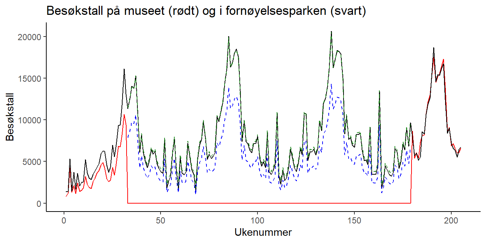
Oppgave 2.13: Når vi ser hvor tett de to besøkstallene beveger seg etter nyåpningen er det ikke rart at de beregnede besøkstallene basert på den nye modellen (markert i grønt over) følger observasjoenen fra fornøyelsesparken.
Anta at hver billett til museet koster $6.99. Hvor stor er differansen mellom erstatningskravet til museet og tilbudet til forsikringsselskapet?
Oppgave 2.14 (Diskusjon): Det er ganske stor forskjell mellom tilbud og krav, men hvis vi tenker oss om skjønner vi fort at begger parter befinner seg i en klassisk catch-22. Hvis den ene partens argument fører til en utbetaling som er for stor eller for liten fordi de tar utgangspunkt i slutten eller starten på en stigende utvikling, må nødvendigvis det motsatte standpunkt også være galt av nøyaktig samme grunn. Kan du foreslå et kompromiss?
7.4 Dataøving 4
En produsent som vil selge kraft til Nord Pool leverer salgsbud til kraftbørsen som spesifiserer, for hver time neste dag, hvor mange megawatt (MW) man er villig til å produsere til ulike priser. Fristen for å levere salgsbud er kl 12:00 dagen før produksjonen skal finne sted. For en vindkraftprodusent er det flere usikre faktorer man må ta stilling til når man skal levere salgsbud for neste dag:
- Timeprisene i spotmarkedet (Euro/MW) er ukjente (blir ikke offentliggjort før kl 12:45).
- For å vite hvor mange megawatt (MW) man kan produsere i en gitt time trenger man å vite vindstyrken. Selv med gode værprognoser vil det fremdeles være betydelig usikkerhet knyttet til vindstyrken i de ulike timene neste dag.
- Dersom den faktiske produksjonen avviker fra det man har meldt inn vil det påløpe en straffekostnad. I timer med mye vind vil man måtte selge den overskytende produksjonen til en lavere pris enn spotprisen, og i timer med lite vind vil man måtte kompensere fleksible produsenter for å dekke opp for den manglende produksjonen. Straffekostnaden (Euro/MW) for over- eller underproduksjon er en ukjent størrelse på budgivningstidspunktet.
I denne dataøvingen skal vi konsentrere oss om å lage prognoser for spotprisen. I case 3 i BED4 kommer dere også til å få bruk for vindstyrken og straffekostnadene, men å lage prognoser for disse vil kreve ferdigheter utover det som gjennomgås i MET4.
Hvis du ikke tar BED4 dette semesteret, så går det helt fint også. Dataøvingen står fint på egne bein, og du kan uansett komme tilbake til disse resultatene hvis du for eksempel skal ta BED4 på et senere tidspunkt.
Du har kanskje lagt merke til at R-kodingen i tidsrekkemodulen har en litt forskjellig stil fra det vi har gjort tidligere i kurset. I denne øvingen vil derfor størsteparten av koden blir oppgitt i oppgaveteksten. Din oppgave blir å kjøre koden, få ut figurer og resultater, samt å kommentere og tolke resultatene.
Vi starter med å laste inn noen pakker som vi kommer til å trenge. Som vanlig må du installere pakkene først dersom du ikke har gjort det allerede:
library(forecast)Warning: package 'forecast' was built under R version 4.3.3library(ggplot2)7.4.1 Oppgave 1: Last inn og se på datasettet
Denne gang er datasettet pakket inn i en såkalt .Rdata-fil. Det er et enkelt filformat for å lagre R-objekter. Last ned p_da.Rdata, og last datasettet inn i R ved å kjøre følgende kommando (der du selvsagt har satt arbeidsmappen til der du har lagt datafilen):
load("p_DA.Rdata")Du skal nå få to tidsrekker i minnet: n03 og no5, som i figuren under:

Disse to tidsrekkene inneholder strømprisen i to prisområder i Norge hver time fra 1. januar 2022 til og med 21. september 2022. Tidsrekken no3 inneholder prisen for Midt-Norge (NO3) og no5 inneholder prisen for Vest-Norge (NO5).
Vi konsentrerer oss om NO3 i første omgang, og kikker raskt på datasettet ved å plotte tidsrekken direkte med autoplot()-funksjonen som vi finner i forecast-pakken:
autoplot(no3)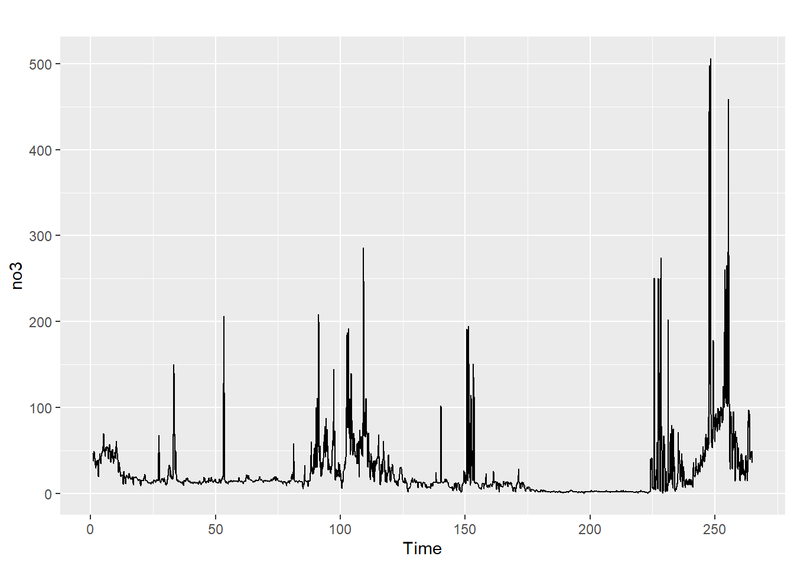
På \(x\)-aksen har vi antall dager siden 1. januar 2022. Skriv en kort kommentar der du peker på noen viktige karakteristikker ved denne tidsrekken. Du må gjerne bruke xlim-argumentet i plot()-funksjonen for å zoome inn og se på mindre tidsperioder. Ser tidsrekken ut til å være stasjonær?
7.4.2 Oppgave 2: Gjem bort den siste dagen slik at vi kan sjekke prediksjonene våre
For å kunne gjøre en vurdering av hvor gode prediksjonene våre er, deler vi nå datasettet vårt i to, der vi tar ut de siste 24 timene som vi kan bruke til å evaluere prediksjonene. Vi kaller disse to delene no3_train, som er den lange delen som vi skal bruke til å estimere en modell (trene en modell), og no3_test som er de siste 24 timene som vi skal bruke til å teste etterpå om modellen duger.
Vi bruker funksjonen window() til å hente ut deler av tidsrekken, der vi må spesifisere start- og sluttverdier som vektorer med to elementer; en for dag og en for time. Det er 264 dager i datasettet vårt, så da får vi:
no3_train <- window(no3, start = c(1, 0), end = c(263, 23))
no3_test <- window(no3, start = c(264, 0), end = c(264, 23))Du kan nå dobbelsjekke at du har fått ut en enkelt dag i no3_test ved å kjøre autoplot(no3_test).
7.4.3 Oppgave 3: Hent ut sesong og trend
Vi har lært at et første steg i tidsrekkeanalyse er å hente ut eventuelle sesong og trendkomponenter. Vi har også sett at det er en enkel funksjon i R som kan gjøre dette for oss, nemlig stl(), slik vi så i seksjonen om trend og sesong.
dekomponert <- stl(no3_train, s.window = "periodic")
autoplot(dekomponert)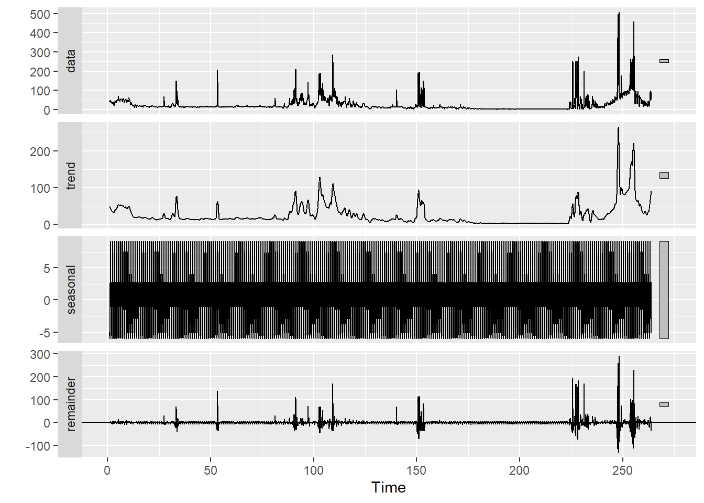
Det var ikke så lett å se detaljer i sesongkomponenten i dette plottet, så vi zoomer inn på en mindre del av x-aksen:
autoplot(dekomponert) + xlim(245, 260)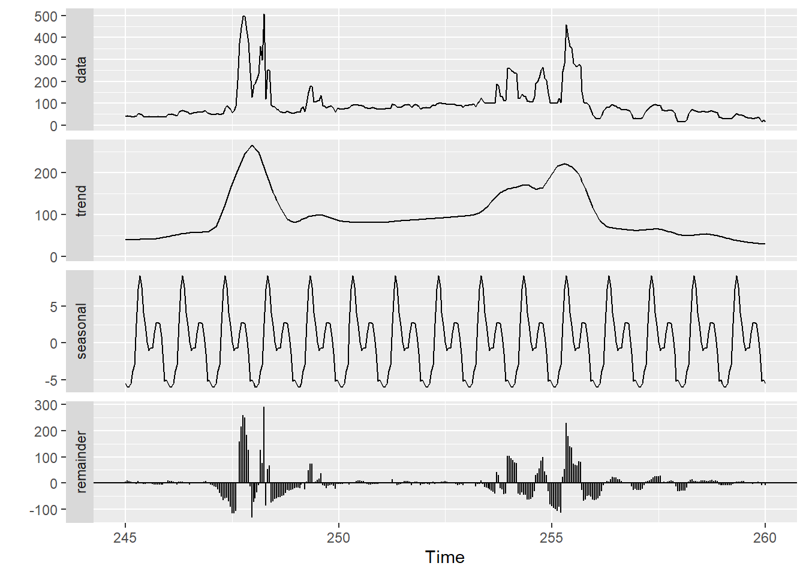
Gi en kort beskrivelse av de ulike komponentene i tidsrekken.
7.4.4 Oppgave 4: Prediker treningstidsrekken 24 steg frem og visualiser resultatene.
Vi skal nå slippe veldig billig unna! Denne oppgaven består egentlig av flere steg:
- Finn en statistisk modell for residualtidsrekken. Bruk for eksempel
auto.arima()for å finne den ARIMA-modellen som passer best til treningsdatasettet. - Bruk denne modellen til å predikere residualtidsrekken 24 steg frem.
- Skriv trendserien 24 steg frem. Her må vi ha en fornuftig måte å ekstrapolere som vi ikke har dekket eksplisitt i materialet vårt.
- Hekt på en ny dag med den daglige sesongvariasjonen.
- Legg sammen prediksjonene av residualene, trend- og sesongkomponenten for å lage en prediksjon av prisserien.
Vi kunne godt satt oss ned for å programmere disse stegene hver for seg. Heldigvis har noen gjort dette før oss, gjennom funksjonen forecast() i forecast-pakken. For å lage en prognose må vi sende inn den dekomponerte tidsrekken, sammen med en spesifikasjon av hvilken type statistisk tidsrekkemodell vi ønsker å tilpasse til residualtidsrekken (vi velger ARIMA, for det er den modellen vi har lært om), og hvor mange steg frem vi ønsker å predikere. Vi kan også legge til signifikansnivået for et prediksjonsintervall som vi vil ha på 95%:
prognose <- forecast(dekomponert, method = "arima", h = 24, level = 95)Vi kan visualisere resultatet ved hjelp av autoplot(). For å kunne se noe fornuftig i plottet så tar vi bare med de 100 siste observerte tidsstegene i tillegg til de 24 prediksjonene:
autoplot(prognose, include = 100)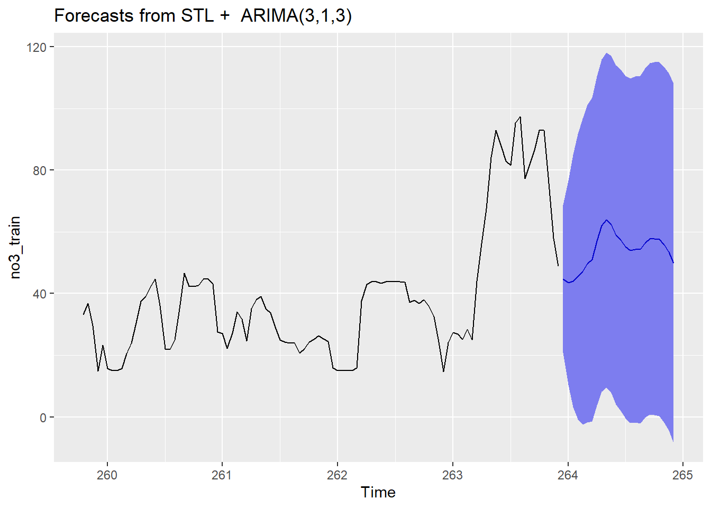
Gi en kommentar til dette plottet.
7.4.5 Oppgave 5: Sammenlign prediksjonene med de faktiske observasjonene
Vi kan nå finne frem igjen no3_test, som er en tidsrekke som inneholder de faktiske observasjonene for dagen der vi har gjort prediksjoner. La oss sammenligne. En måte å visualisere dette på er å hente ut prediksjonene fra prognose-objektet (de ligger under $mean), og sette det sammen med de faktiske observasjonene (som vi har lagret i no3_test). Vi kan også hente ut prediksjonsintervallene, og sette alt inn i en data frame:
# Setter prediksjoner, intervaller og observasjoner inn i samme data frame.
prediksjoner <- data.frame(
x = 1:24, # Timer i døgnet for x-aksen
prediksjon = prognose$mean, # Predikerte priser
nedre = prognose$lower[,1], # Nedre og øvre prediksjonsintervaller
ovre = prognose$upper[,1],
observert = no3_test # De faktiske observasjonene
)
# Lager plott
ggplot(prediksjoner) +
geom_line(aes(x = x, y = prediksjon), linetype = "dashed") + # Prediksjoner
geom_line(aes(x = x, y = nedre), colour = "darkred") + # Nedre grense
geom_line(aes(x = x, y = ovre), colour = "darkred") + # Øvre grense
geom_line(aes(x = x, y = observert), linewidth = 1.5) + # Observert
xlab("") + ylab("") +
ggtitle("24 timers prognose av strømpris") +
theme_minimal()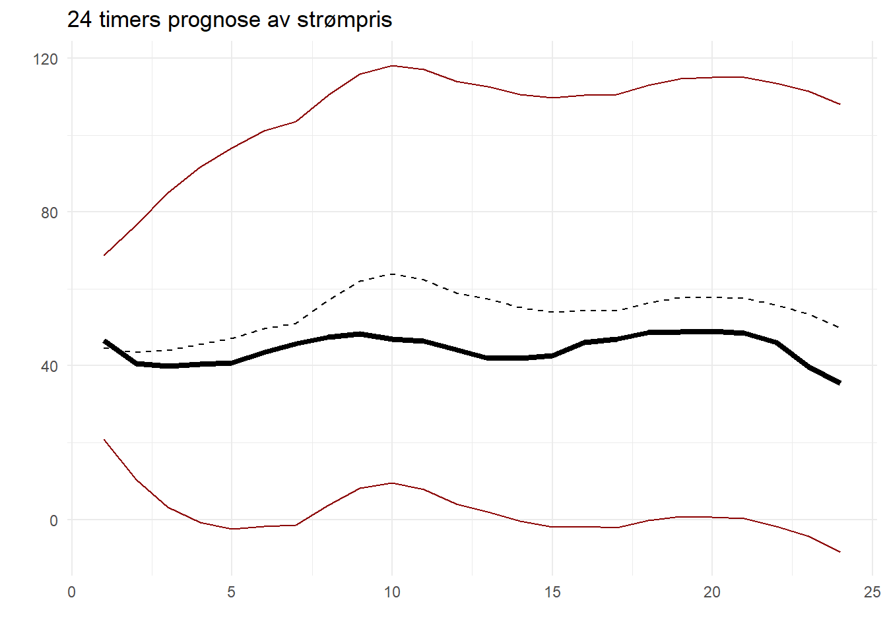
I dette plottet er prediksjonene av strømprisen vist som en stiplet linje, mens de prisene som faktisk ble observert er vist som en tykk heltrukken linje. Kommenter plottet.
7.4.6 Oppgave 6: Lag prediksjoner for neste dag
Så langt har vi brukt alle dagene i datasettet vårt bortsett fra den siste til å predikere strømprisen på den siste dagen. Resultatene ser ut til å være gode. Du kan nå gjenta denne prosedyren, men i stedet for tidsrekken no3_train skal du nå bruke hele tidsrekken no3 til å predikere prisen for dagen etter det – den 22. september 2022 – en dag der vi ikke har de faktisk realiserte prisene i datasettet vårt.
Du skal få et prediksjonsplott som ser slik ut:
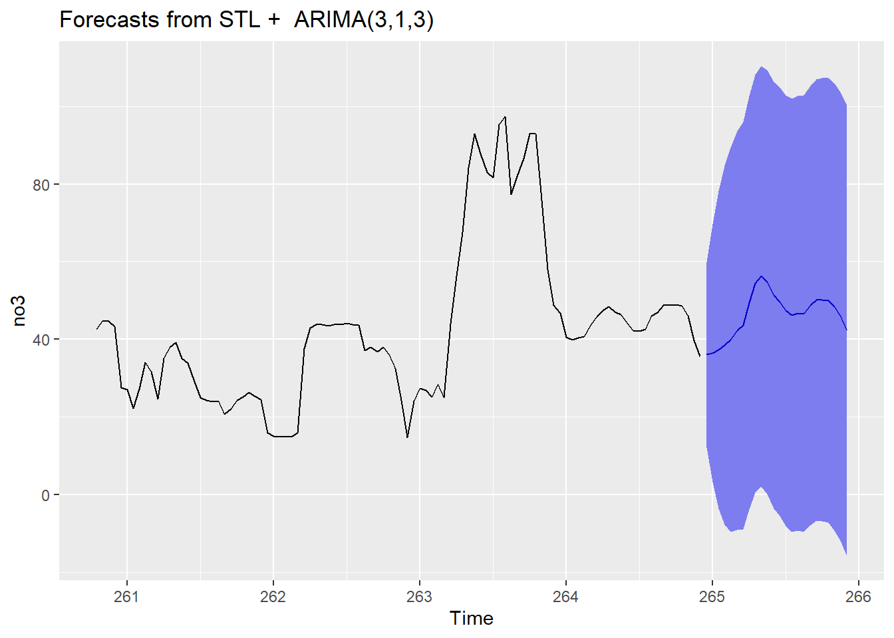
Du kan så samle prediksjonene i en data frame som i forrige oppgave, men der vi selvsagt ikke kan ha med en kolonne med observerte priser, siden vi ikke har dem tilgjengelige. Den endelige tabellen med observasjoner skal se slik ut:
x prediksjon nedre ovre
1 1 36.02709 12.1495723 59.90460
2 2 36.45012 3.3208432 69.57940
3 3 37.28821 -3.5736943 78.15012
4 4 38.53910 -7.6663095 84.74451
5 5 39.89017 -9.5638644 89.34420
6 6 42.27134 -9.0837471 93.62643
7 7 43.55218 -8.9521015 96.05647
8 8 49.43543 -3.8202856 102.69114
9 9 54.36794 0.5712673 108.16460
10 10 56.23131 2.0083818 110.45425
11 11 54.74981 0.1657312 109.33389
12 12 51.32547 -3.5811987 106.23213
13 13 49.64904 -5.5564816 104.85456
14 14 47.41288 -8.0764075 102.90216
15 15 46.22697 -9.5361822 101.99013
16 16 46.70673 -9.3236145 102.73708
17 17 46.61878 -9.6740934 102.91166
18 18 48.72382 -7.8282025 105.27583
19 19 50.11119 -6.6974082 106.91979
20 20 50.21319 -6.8499490 107.27634
21 21 50.04209 -7.2739046 107.35808
22 22 48.34032 -9.2270566 105.90769
23 23 45.94396 -11.8734681 103.76139
24 24 42.20995 -15.8563146 100.27621Kommenter.
7.4.7 Oppgave 7: Lagre prediksjonene i en excel-fil.
Hvis du tar BED4 dette semesteret (eller skal ta BED4 på et senere tidspunkt) så trenger du nå å eksportere disse prediksjonene til en Excel-fil. En pakke som kan gjøre dette er writexl (som du, igjen, er nødt til å installere før bruk: install.packages("writexl")). Hvis du har lagret prediksjonene i en data frame som heter prediksjoner2, så kan du skrive den ut i en Excel-fil på følgende måte:
library(writexl)
write_xlsx(prediksjoner2, "no3_prediksjoner.xlsx")Du skal nå ha en Excel-fil med prediksjonene dine i filen no3_prediksjoner.xlsx i arbeidsmappen din.
7.4.8 Oppgave 8: Gjør det samme for no5
Du kan nå gjenta øvelsen over for å få ut samme type prediksjoner for det andre prisområdet. Tidsrekken finner du i no5 og prediksjonsplottet ser slik ut:
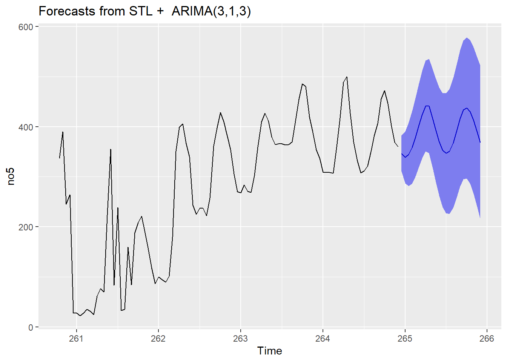
Data framen med prediksjonene skal se slik ut:
prediksjoner3 <- data.frame(
x = 1:24, # Timer i døgnet for x-aksen
prediksjon = prognose3$mean, # Predikerte priser
nedre = prognose3$lower[,1], # Nedre og øvre prediksjonsintervaller
ovre = prognose3$upper[,1]
)
prediksjoner3 x prediksjon nedre ovre
1 1 346.3622 310.5934 382.1310
2 2 338.6796 286.6895 390.6698
3 3 344.5907 281.3350 407.8464
4 4 358.3632 286.3178 430.4086
5 5 378.5406 300.1708 456.9105
6 6 402.4033 319.0857 485.7209
7 7 424.7142 337.5252 511.9031
8 8 441.2872 350.5347 532.0397
9 9 441.0059 346.6958 535.3159
10 10 417.9910 319.6357 516.3462
11 11 393.0380 290.0513 496.0247
12 12 369.8592 261.5774 478.1409
13 13 352.9104 239.0015 466.8192
14 14 346.8510 227.3225 466.3794
15 15 350.4399 225.7535 475.1262
16 16 367.2739 238.1157 496.4321
17 17 390.4917 257.6416 523.3417
18 18 415.6232 279.7278 551.5187
19 19 433.2506 294.7538 571.7474
20 20 437.4176 296.4963 578.3390
21 21 429.5152 286.1074 572.9229
22 22 412.5279 266.3558 558.7000
23 23 390.6720 241.3325 540.0115
24 24 368.3594 215.4343 521.2845Du lagrer den som en Excel-fil slik:
write_xlsx(prediksjoner3, "no5_prediksjoner.xlsx")Du kan laste ned de ferdige Excel-filene her for å kontrollere at du har fått det til: no3_prediksjoner.xlsx og no5_prediksjoner.xlsx.
7.5 Dataøving 5
7.5.1 Oppgave 1: Interaktiv øvelse
Før vi tar fatt på dataanalysens begynner vi som vanlig med litt R-trening i swirl. Har du allerede installert pakken swirl (skriv install.packages("swirl") i konsoll hvis ikke) starter du opp swirl med å skrive følgende i konsollen:
library(swirl)
swirl()Du vil i starten bli bedt om å skrive inn ditt navn og så følger litt info om hvordan swirl fungerer. Du blir så bedt om å velge kurs. Her skal du først velge alternativet ‘R Programming’. Merk at du kanskje må trykke alternativet ‘No. Let me start something new’ for å komme tilbake til hovedmenyen etter å ha brukt swirl tidligere. Du får så se alle modulene dette kurset inneholder. I denne øvingen skal du prøve deg på modul 9 ‘Functions’. I denne modulen vil du lære litt om funksjoner i R.
Merk at det helt til høyre vil står hvor langt du har kommet i prosent. Står du helt fast med et punkt kan du skrive skip() for å hoppe over dette punktet. Når du har fullført en modul blir du spurt om du vil motta ‘credit’ for å ha fullført modulen. Her kan du svare nei. Ønsker du å avbryte underveis skriver du bye(). Skriver du inn det samme navnet når du eventuelt starter swirl igjen kan du fortsette der du slapp. Husk å avslutt swirl (esc) før du begynner på del to av øvingen. Lykke til!
7.5.2 Oppgave 2 - Maskinlæring: Logistisk regresjon og k nærmeste naboer
I denne oppgaven skal vi se på de samme dataene som ble brukt i forelesningen om logistisk regresjon. Vi har data på 10000 kredittkortkunder og vi ønsker å kunne bygge og trene en best mulig modell til å predikere hvilke kunder som vil misligholde sin gjeld.
Oppgave 2.1: Vi starter med å få tak i dataene. Disse er integrert i pakken ISLR. Last inn pakken og ta en titt på dataene ved bruk av følgende linjer (hvordan du kommenterer er opp til deg):
library(ISLR) # Pakke som inneholder dataene
head(Default) # Viser starten på dataframen
str(Default) # Viser hvilke typer variabler dataframen inneholder- Responsvariabelen er
- : Dette er en kategorisk variabel. Misligholdt kunden gjelden?
- Forklaringsvariabler:
- : Kategorisk
- : Kontinuerlig, størrelsen på gjelden ($)
- : Kontinuerlig, kundens årlige inntekt ($)
Oppgave 2.2: Det neste vi gjør er å visuelt undersøke avhengigheten mellom det å misligholde (default) og hvor stor gjeld (balance) kunden har . Vanligvis når vi visuelt skal inspisere sammenhengen mellom to variabler lager vi et spredningsplott. Men når den ene variabelen er kategorisk er det mer informativt å sammenligne to boksplott av den kontinuerlige variabelen for hver av gruppene den kategoriske variabelen representer. Dette kan gjøres på følgende måte:
boxplot(balance ~ default, data = Default,
ylab = "balance", xlab = "default")Her er det formelen balance ~ default som gjør at boxplot() funksjonen lager to boksplott av balance; et for gruppen som misligholdt (“Yes”) og et for gruppen som ikke misligholdt (“No”). Reflekter over figuren og gjør deg opp en mening om sammenhengen mellom default og balance.
Oppgave 2.3: Det er lurt å dele inn dataene i et treningssett og et testsett når vi driver med maskinlæring. Treningsettet bruker vi til å tilpasse (trene/lære) modellen, mens testsettet bruker vi til å se hvor godt forskjellige modeller presterer. Dette kan gjøres på flere måter, men vi velger her å bruke pakken dplyr som ble beskrevet i siste del av datalabb 2.
Først legger vi til en unik id til hver kunde. Vi lar id-nummeret være lik radnummeret til kunden og til dette bruker vi funksjonen mutate:
library(dplyr)
my_data <- Default %>%
mutate(id = row_number()) Siden vi nå skal trekke et utvalg av dataene våre kan det være lurt å sikre at resultatet er reprodusibelt ved å sette
set.seed(123) foran koden som følger. Du kan gjerne velge et annet tall enn 123, men når en gjør dette i forkant av en tilfeldig trekning i R er trekningen bestemt.
Så trekker vi et treningssett bestående av 70 % av dataene ved bruk av funksjonen sample_frac:
train <- my_data %>%
sample_frac(.70)De resterende kundene bruker vi som testsett ved bruk av funksjonen anti_join:
test <- my_data %>% # Treningssettet er da de resterende 30 % av dataene
anti_join(train, by = 'id')Koden over trekker ut alle kunder som ikke har lik id som i treningssettet som derfor svarer til de resterende 30 % av dataene.
Oppgave 2.4: Vi forklarer i denne oppgaven hvordan en logistisk regresjonsmodell kan estimeres, tolkes og brukes. Du vil måtte lage nye modeller med tilsvarende koder i oppgavene som følger.
Vi lager en modell hvor vi bruker variabelen balance (gjeld) som forklaringsvariabel. Vi bruker da funksjonen glm:
model1 <- glm(default ~ balance, data = train,
family = "binomial")Syntaksen til glm-funksjonen er veldig lik den vi bruker i regresjon (lm-funksjonen) bortsett fra at vi må spesifisere argumentet family = "binomial" for at å fortelle R at vi ønsker å gjøre en logistisk regresjon. Merk at vi bruker treningssettet til å estimere (trene) modellen ved å spesifisere argumentet data = train.
Det kan være lurt å se om forklaringsvariabelen balance har en signifikant effekt på default ved å bruke summary funksjonen:
summary(model1)For å tolke hvilken effekt balance (gjeld) har på default (mislighold) er det lurt å regne ut hva effekt en økning på 1 $ i balance har på oddsen for default (Se forelesning):
exp(coef(model1)) (Intercept) balance
2.205746e-05 1.005567e+00 Vi ser at oddsen for default øker med en faktor 1.0056 (en 0.56 % økning) dersom balance øker med 1 $.
Si at du ønsker å predikere sannsynligheten for hvorvidt to kunder med henholdsvis 1000 $ og 2000 $ i balance vil misligholde sitt lån. Da kan vi bruke predict2 på følgende måte:
to_personer <- data.frame(balance = c(1000, 2000))
pred <- predict(model1, newdata = to_personer, type = "response")
pred 1 2
0.005648303 0.593966756 Det første argumentet i funksjonen predict er hvilken modell vi skal bruke i prediksjonen (model1). Det andre argumentet newdata er hvilke kunder vi ønsker å predikere misligholdsannsynligheter for. Vi setter dette argumentet til data.frame’n vi har kalt to_personer hvor hver rad svarer til en kunde med et sett forklaringsvariabler (i dette tilfellet to kunder og derfor to rader). Det er viktig at den inneholder en (eller flere) kolonne(r) med kolonnenavn som svarer til navnet til forklaringsvariabelen(e) vi har brukt i modellen. Argumentet type = "response" gjør at vi får returnert sannsynligheten for mislighold og ikke bare verdien av det lineære leddet i modellen.
Hvis vi ut fra disse sannsynlighetene ønsker en klassifiseringsregel som klassifiserer om kunden vil misliholde eller ikke (“Yes/No”) er det naturlig å tildele kunden “Yes” hvis misligholdsannsynligheten overstiger en hvis grense og “No” hvis ikke. Det kan det tenkes at kredittgiver vil være enten konservativ (sette grensen lavt, si 0.3) eller liberal (sette grensen høyt, si 0.7), men i eksempelet under bruker vi en “nøytral” grense på 0.5:
ifelse(pred > 0.5, "Yes", "No") 1 2
"No" "Yes" Som navnet tilsier, vurderer ifelse funksjonen en logisk test i første argumentet (pred > 0.5 hvor pred er misligholdsannsynlighetene vi predikerte) og hvis testen har verdi TRUE gir den ut det du skriver i det andre argumentet ("Yes"), og det tredje argumentet ("No") ellers. Vi ser at individet med 1000 $ i gjeld blir klassifisert som “No”, mens individet med 2000 $ i gjeld blir klassifisert som “Yes”.
Oppgave 2.5: Lag en ny modell ved navn model2 hvor du bruker den kategoriske variabelen student som forklaringsvariabel.
- Hvilken effekt har det å være student på for oddsen for mislighold?
- Prediker sannsynligheten for at en student og en ikke-student misligholder gjelden sin.
Oppgave 2.6: Lag en tredje model ved navn model3 hvor du bruker alle forklaringsvariablene.
- Hvilken effekt har det å være student på for oddsen for mislighold nå? Sammenlign med forrige oppgave.
- Undersøk visuelt om det er en sammenheng mellom
studentogbalancemed å lage et boxplot overbalancefor studenter og et for ikke-studenter (hint: se Oppgave 2.2). - Prediker sannsynligheten for mislighold for en ikke-student og en student med lik
balanceogincomepå henholdsvis 1500 $ og 10000 $. Sammenlign med prediksjonen du gjorde i Oppgav 2.4. Basert påmodel2ogmodel3, hvordan skal kredittgiver forholde seg til en student versus en ikke-student dersom a) Ingen informasjon ombalanceellerincomeer oppgitt og b) dersom en vetbalanceogincome?
Oppgave 2.7: I denne oppgaven skal vi trene opp en knn (k-nærmeste-naboer) modell til å gjøre en tilsvarende klassifisering som den logistiske regresjonsmodellen gjorde over. Funksjonen train som vi trenger er inneholdt i pakken caret (som må installeres ved hjelp av install.packages("caret")). Vi velger å tilpasse en modell hvor antall naboer “k” velges automatisk med kryssvalidering vi argumentet “`trControl”:
library(caret)
# R-kode dersom vi vil velge k automatisk
set.seed(200)
trControl <- trainControl(method = "cv", # 5-fold kryssvalidering
number = 5)
# Tilpasser modellen
model4 <- train(default ~ balance + income + student,
data = train,
method = "knn",
trControl = trControl,
metric = "Accuracy")Vi kan sjekke hvilken k som ble valgt på følgende måte (siden kryssvalidering bruker tilfeldige trekninger kan resultatet bli noe foreskjellig fra gang til gang, selv om datasettet er det samme):
# Hvilken k valgte kryssvalideringen?
k <- model4$finalModel$k
k[1] 5Som for de andre modellene bruker vi funksjonen predict når vi skal predikere og syntaksen er helt lik:
to_kunder <- data.frame(balance = c(1000, 2000), income = 10000, student = c("Yes", "Yes"))
predict(model4, newdata = to_kunder)[1] No Yes
Levels: No YesMerk at i motsetning til de logistiske regresjonsmodellene som predikerte sannsynligheter klassifiserer knn modellen kundene direkte som “Yes”/“No”.
Oppgave 2.8: Vi ønsker å vurdere hvilken av model3 (logistisk regresjon) og model4 (knn) som er best. Vi kan da sjekke hvor godt de klarer å klassifisere testsettet vårt hvor vi vet hvem som har misligholdt lånene sine. Vi starter med å hente ut de sanne verdiene av default i treningssettet:
sann <- test$default # Den sanne verdien av default i testdataeneDisse skal vi så sammenligne med hvordan modellene klassifiserer de samme kundene basert på de andre variablene. Vi gjør først klassifiseringen med den logistiske regresjonsmodellen:
pred_logreg <- predict(model3, newdata = test, type = "response") # Predikert sannsynlighet
klass_logreg <- ifelse(pred_logreg > 0.5, "Yes", "No") # Klassifisering av kundeneEn oversikt over hvor mange riktige/feil klassifiseringer modellen gjør kan lett oppsummeres med en kontigenstabell. For å lage en kontigenstabell i R bruker vi funksjonen table:
logreg_tab <- table(sann, klass_logreg) # Kontigenstabell
logreg_tab klass_logreg
sann No Yes
No 2889 11
Yes 70 30Her kan vi f.eks se at 2889 kunder blir riktig klassifisert som “No”, dvs at de ikke misligholdt lånet og modellen spår at de ikke vil misligholde lånet. Merk at diagonalen (2889 og 30) representerer korrekte klassifiseringer, mens av-diagonal (11 og 70) representer feil klassifiseringer.
Det kan være en fordel å dele kontigenstabellen over med totalt antall kunder for å få andelel i stedet. Funksjonen prop.table gjør nettopp dette:
logreg_tab_norm <- logreg_tab %>%
prop.table %>% # normaliser
round(3) # rund av til 3 desimaler
logreg_tab_norm klass_logreg
sann No Yes
No 0.963 0.004
Yes 0.023 0.010Summen av diagonalen på denne tabellen (0.963 og 0.01) gir da totalt andel korrekt klassifiseringer:
logreg_tot <- sum(diag(logreg_tab_norm)) # Total andel korrekt klassfisering
logreg_tot[1] 0.973Oppgave 2.9: Gjør en tilsvarende klassifisering av kundene i testsettet med knn modellen model4 og sammenlign med resultatet over. Hvilken modell foretrekker du? Hvilke egenskaper ved klassifisering tror du kredittgiver vektlegger?
7.5.3 Oppgave 3 – Paneldata: Iskaffe og varme dager
I denne oppgaven skal vi jobbe med et simulert paneldatasett. En kaffebarkjede har data fra 150 kaffebarer, observert månedlig over tre år (januar 2021 – desember 2023). For hver kaffebar og måned har vi informasjon om antall iskaffe solgt (iskaffe_salg) og antall dager den måneden med temperatur over 20°C (varme_dager). Kjeden ønsker å vite: Hvor mange ekstra iskaffe selger en typisk bar per ekstra varm dag?
Datasettet er simulert med en kjent, sann effekt – men denne røper vi ikke ennå. Last ned datasettet:
Oppgave 3.1
Les inn datasettet og gjør deg kjent med strukturen:
library(readr)
library(dplyr)
kaffebar <- read_csv("kaffebar_panel.csv")
head(kaffebar)
dim(kaffebar)- Hvor mange kaffebarer er det i datasettet?
- Hvor mange måneder er det observasjoner for?
- Er panelet balansert (like mange observasjoner per bar)? Bruk gjerne
count()ogsummarise()til å sjekke dette.
Oppgave 3.2
Vi skal nå utforske datasettet visuelt. Begynn med å beregne gjennomsnittlig iskaffe-salg per måned (over alle barer), og lag et linjeplott:
library(ggplot2)
# beregne gjennomsnitt per måned
gj_snitt <- kaffebar %>%
group_by(maaned_nr) %>%
summarise(snitt_salg = mean(iskaffe_salg))
# plot
ggplot(gj_snitt, aes(x = maaned_nr, y = snitt_salg)) +
geom_line() + geom_point() +
scale_x_continuous(
breaks = c(1, 7, 13, 19, 25, 31),
labels = c("Jan 2021", "Juli 2021", "Jan 2022", "Juli 2022", "Jan 2023", "Juli 2023")
) +
labs(x = "Maaned", y = "Gjennomsnittlig iskaffe-salg")Beskriv hva du ser. Er mønsteret som forventet?
Lag deretter et plott der du velger ut 5 tilfeldige kaffebarer og fargelegger etter kaffebar_id:
set.seed(42)
utvalgte <- sample(unique(kaffebar$kaffebar_id), 5)
kaffebar_utvalg <- kaffebar %>% filter(kaffebar_id %in% utvalgte)
ggplot(kaffebar_utvalg, aes(x = maaned_nr, y = iskaffe_salg, color = factor(kaffebar_id))) +
geom_line() + geom_point(size = 1) +
scale_x_continuous(
breaks = c(1, 7, 13, 19, 25, 31),
labels = c("Jan 2021", "Juli 2021", "Jan 2022", "Juli 2022", "Jan 2023", "Juli 2023")
) +
labs(x = "Maaned", y = "Iskaffe solgt", color = "Kaffebar")Hva legger du merke til? Følger barene det samme mønsteret? Ligger de på samme nivå?
Oppgave 3.3
Estimer en enkel regresjonsmodell (pooled OLS, dvs. uten faste effekter) der iskaffe_salg er utfallsvariabel og varme_dager er forklaringsvariabel. Vi bruker feols fra fixest-pakken fordi vi skal bygge videre med faste effekter i neste deloppgave:
library(fixest)
pooled <- feols(iskaffe_salg ~ varme_dager, data = kaffebar)
summary(pooled)- Tolk koeffisienten på
varme_dager. - Tenk tilbake på plottene du laget i 3.2. Kan du se noen grunn til at denne koeffisienten over- eller underestimerer den faktiske effekten av varme dager?
Oppgave 3.4
Estimer nå modellen med faste effekter for kaffebar:
fe <- feols(iskaffe_salg ~ varme_dager | kaffebar_id, data = kaffebar)
etable(pooled, fe)- Hva har skjedd med koeffisienten?
- Hva kontrollerer kaffebar-faste effekter for? Tenk på hva du så i plottet med de 5 utvalgte barene.
- Hvorfor endrer estimatet seg?
Oppgave 3.5
Legg til tidsfaste effekter (for maaned_nr):
fe_tw <- feols(iskaffe_salg ~ varme_dager | kaffebar_id + maaned_nr, data = kaffebar)
etable(pooled, fe, fe_tw)- Sammenlign koeffisientene fra de tre modellene.
- Hva kan tidsfaste effekter fange opp i denne sammenhengen? Tenk på sesongmønsteret du så i oppgave 3.2.
Oppgave 3.6
Datasettet er simulert med en sann effekt lik \(\beta_1 = 5\): Hver ekstra varm dag gir i gjennomsnitt 5 ekstra iskaffe solgt.
Sammenlign denne sanne verdien med estimatene fra de tre modellene. Hvilken modell kom nærmest, og hvorfor bommer de andre?
7.5.4 Oppgave 4 – Kausal identifikasjon: Ølskatt og trafikkdødsfall
I denne oppgaven bruker vi et ekte datasett med årlige observasjoner for 48 amerikanske delstater fra 1982 til 1988. Datasettet inneholder blant annet informasjon om ølskatt og trafikkdødsfall, og vi ønsker å undersøke sammenhengen mellom disse.
Oppgave 4.1
Installer (om nødvendig) og last inn pakken AER, og last inn datasettet Fatalities:
library(AER)
library(dplyr)
data("Fatalities")Utforsk datasettet med head(), dim() og str().
- Hvor mange observasjoner er det?
- Identifiser variablene
stateogyearsom definerer panelstrukturen. Hvor mange delstater og år er det? - Er panelet balansert?
Vi skal jobbe med dødsraten per innbygger, ikke det absolutte antallet dødsfall. Variablene fatal (antall trafikkdødsfall) og pop (befolkning) finnes i datasettet. Lag en ny variabel frate som måler antall trafikkdødsfall per 10 000 innbyggere:
Fatalities <- Fatalities %>%
mutate(frate = fatal / pop * 10000)Oppgave 4.2
Lag et spredningsplott med beertax (ølskatt i dollar per kasse) på x-aksen og frate (dødsrate) på y-aksen:
library(ggplot2)
ggplot(Fatalities, aes(x = beertax, y = frate)) +
geom_point() +
labs(x = "Olskatt (dollar per kasse)", y = "Trafikkdodsfall per 10 000 innb.")Hva slags sammenheng ser du? Stemmer dette med hva du ville forventet?
Oppgave 4.3
Estimer en pooled OLS-regresjon:
library(fixest)
pooled <- feols(frate ~ beertax, data = Fatalities)
summary(pooled)- Tolk koeffisienten. Hva sier den om sammenhengen mellom ølskatt og trafikkdødsfall?
- Gir fortegnet mening? Hva kan forklare resultatet?
Oppgave 4.4
Estimer modellen med faste effekter for delstat:
fe_state <- feols(frate ~ beertax | state, data = Fatalities)
etable(pooled, fe_state)- Hva har skjedd med fortegnet på koeffisienten?
- Forklar hva delstatsfaste effekter kontrollerer for. Hva slags forskjeller mellom stater kan ha drevet det positive estimatet i pooled OLS?
- Hva er forskjellen på å sammenligne stater med hverandre (pooled OLS) og å se på endringer innad i samme stat over tid (faste effekter)?
Oppgave 4.5
Legg til tidsfaste effekter:
fe_tw <- feols(frate ~ beertax | state + year, data = Fatalities)
etable(pooled, fe_state, fe_tw)- Sammenlign de tre modellene.
- Hva kan tidsfaste effekter fange opp her? Tenk på nasjonale trender i perioden 1982–1988.
Oppgave 4.6
Refleksjonsoppgave: Er det rimelig å tolke koeffisienten fra modellen med toveis faste effekter som den kausale effekten av ølskatt på trafikkdødsfall? Hva kan eventuelt gjenstå i restleddet som truer en slik tolkning?